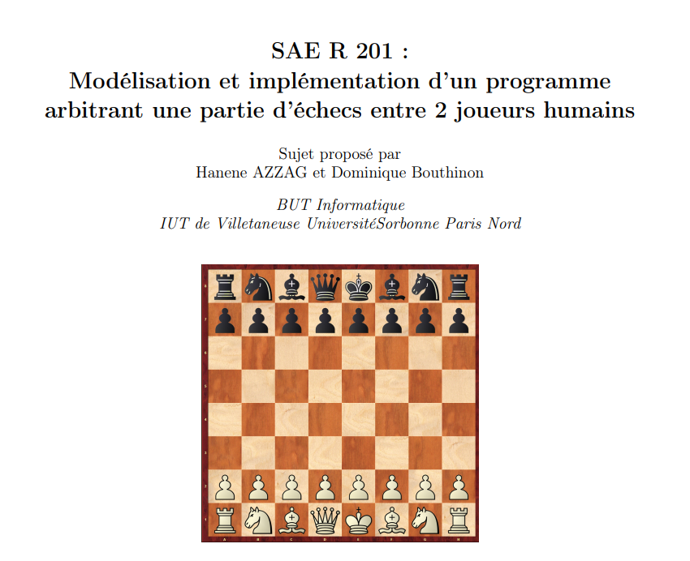

Développement d'une application Java
Application Java orientée objet avec interface graphique et base de données

Informations clés
Le projet en bref
Premier vrai projet d'équipe en BUT. Développement d'une application Java complète avec interface graphique (JavaFX) et persistance en base de données via le pattern DAO (Data Access Object), qui sépare la logique métier de l'accès aux données.
Ce projet m'a vraiment fait comprendre la programmation orientée objet au-delà de la théorie : classes, héritage, encapsulation, polymorphisme — chaque concept avait son rôle concret dans le code.
Comment ça s'est déroulé
Conception en équipe
Diagrammes de classes UML, répartition des modules entre les membres.
Mise en place de Git
Première utilisation sérieuse de Git en équipe. Quelques conflits gérés à la main.
Développement parallèle
Chacun sur son module : moi sur la couche DAO, un autre sur l'interface JavaFX, un autre sur la logique métier.
Intégration finale
Phase la plus difficile : connecter les modules entre eux. Beaucoup de debug en équipe.
Soutenance
Démo live de l'application devant les enseignants.